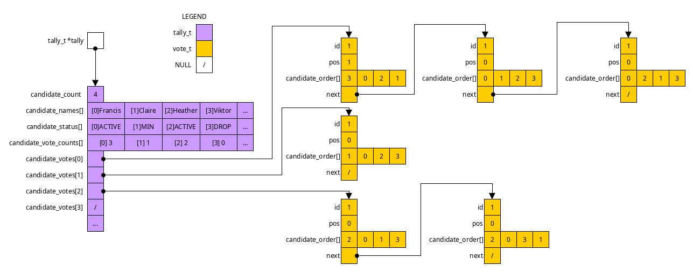
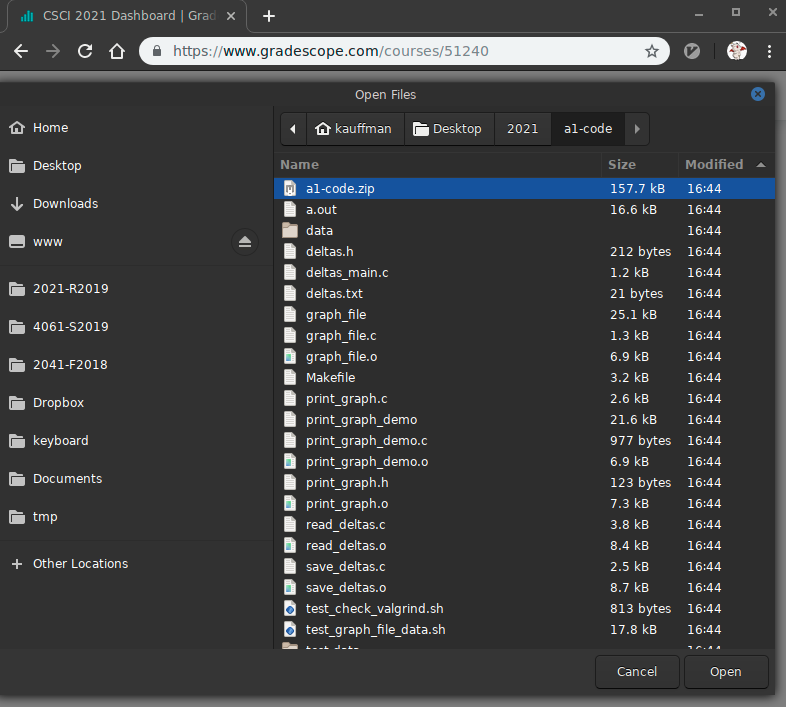
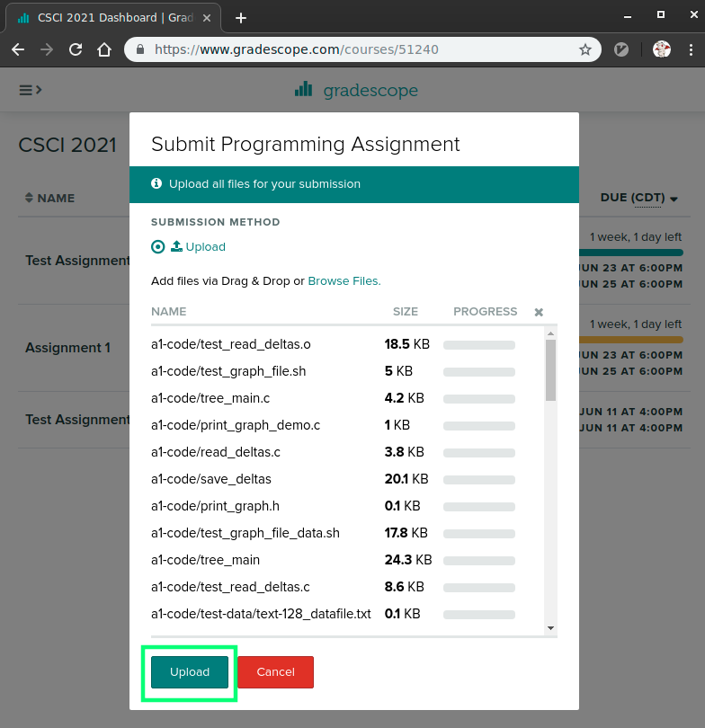
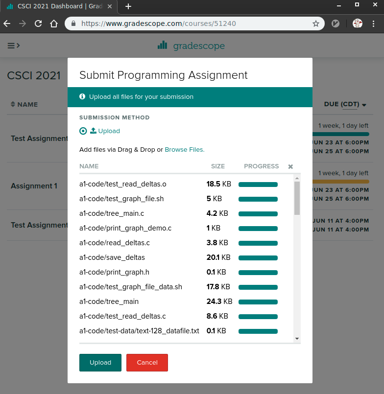
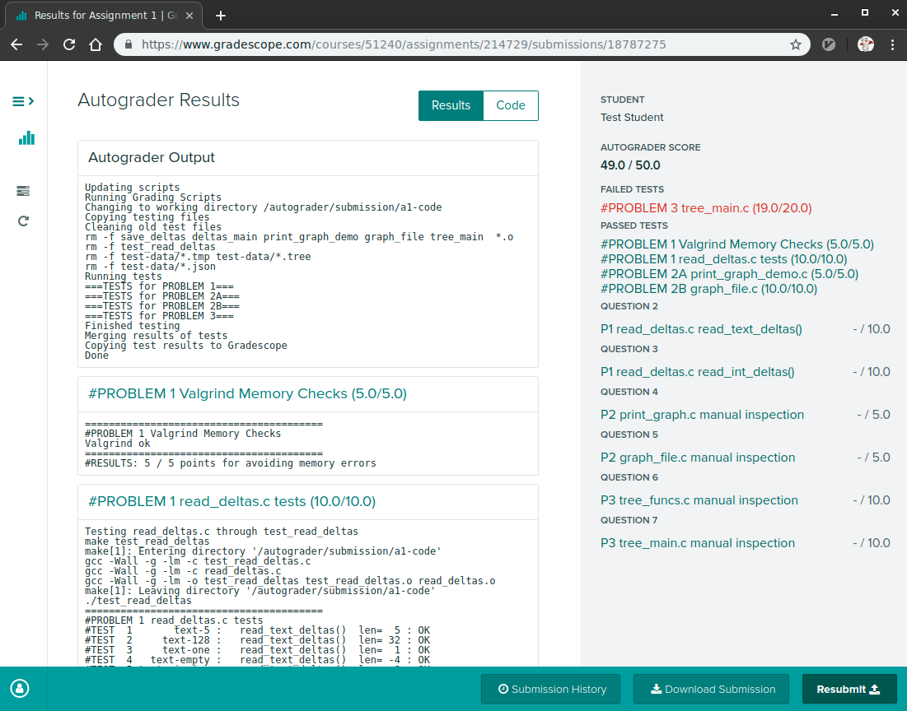

CMSC216 Project 1: C Programming
- Due: 11:59pm Mon 23-Sep-2024
- Approximately 4.0% of total grade
- Submit to Gradescope
- Projects are individual work: no collaboration with other students is allowed. Seek help from course staff if you get stuck for too long.
CODE DISTRIBUTION: p1-code.zip
VIDEO OVERVIEW: https://youtu.be/Hq0-QsamO1M
CHANGELOG:
- Wed Sep 11 02:25:02 PM EDT 2024
A video overview of Project 1 has been uploaded here: https://youtu.be/Hq0-QsamO1M. The audio quality for the first few minutes of the video is a bit distorted but stabilizes about 3 minutes in. Apologies for that technical mishap.
Several typos in the project spec and diagrams that came up in the video have been corrected.
- Wed Sep 11 12:19:21 PM EDT 2024
- Hyperlink to P1 added to the
course schedule. Minor typo in the Documentation Comments for
vote_next_candidate()corrected: return value for the first example was incorrect as reported in Post 112.
1 Introduction
Ranked Choice Voting (RCV) (also called Instant Runoff Voting (IRV)) is an election system in which each voter ranks candidates for a position according to preference rather than selecting only their first choice. This is the source of the "ranked choice" name. Election results are calculated in rounds in which candidates with the lowest vote count are dropped. If a voter's first-choice is dropped, their vote moves to their next highest choice. This is the source of the "instant runoff" name: a runoff election is when low-vote candidates are eliminated and voters choices are restricted. With RCV run-offs can be done "instantly" based on the rankings of candidates by voters.
RCV is generally considered advantageous over other voting schemes and have started to see use in some local and state-wide election across the USA municipal elections in Takoma Park in Montgomery County, MD. It means that voters are free to cast votes for unpopular candidates who strongly align with their views knowing that if their favorite is eliminated, their vote will not be lost but transfer to their next best choice.
A couple videos explaining Ranked Choice Voting:
- City of Minneapolis description if Ranked Choice Voting (Youtube, 2:00min)
- MPR Overview of Instant Runoff Voting (Youtube, 1:10min)
This project will center on calculating the results of elections which use RCV.
- The RCV algorithm is iterative in nature with several termination criteria so looping and conditionals will be essential.
- Votes and Intermediate results must be encoded using C
structsand data structures (linked lists) in order to efficiently calculate vote re-distribution - Voting information will be loaded from files necessitating some file I/O to be used
1.1 Simplified Rules for Ranked Choice Voting
- Active Candidates: Each candidate in the election starts out Active but may be dropped (eliminated) during a round due to having the fewest votes.
- Minimum Vote Candidates: Each round, the candidates with the minimum number of votes is noted as such and is subject to being dropped at the beginning of the next round.
- Dropped Candidates: Barring other conditions, candidates with the minimum number of votes are dropped from the election and their votes are re-assigned to Active candidates.
- Winning: If at any time, only a single candidate is Active, they are the winner. This may be due to all other candidates being Dropped or having Minimum votes. The single Active candidate is the Winner and the election ends.
- Multi-way Ties: If at any time, all Active candidates are identified as having the Minimum votes, a tie has occurred. This may be a 2-way, 3-way, 4-way, etc. tie and will be referred to as a "Multi-way Tie". If this occurs, the election ends with a Tie Result. (If this occurs in real elections, there must be some law/policy on how to proceed with either breaking the tie or sharing power between the tied candidates).
1.2 An Example Election
Below is a sample of how an RCV election is tabulated.
Candidates and Votes
4 candidates
- 0:Francis
- 1:Claire
- 2:Heather
- 3:Viktor
12 Votes (Ballots)
| Candidate | |||||
|---|---|---|---|---|---|
| Ballot# | Order | 1st Choice | 2nd Choice | 3rd Choice | 4th Choice |
| #0001 | 0 3 2 1 | 0:Francis | 3:Viktor | 2:Heather | 1:Claire |
| #0002 | 1 0 2 3 | 1:Claire | 0:Francis | 2:Heather | 3:Viktor |
| #0003 | 2 1 0 3 | 2:Heather | 1:Claire | 0:Francis | 3:Viktor |
| #0004 | 2 1 0 3 | 2:Heather | 1:Claire | 0:Francis | 3:Viktor |
| #0005 | 1 0 2 3 | 1:Claire | 0:Francis | 2:Heather | 3:Viktor |
| #0006 | 0 2 1 3 | 0:Francis | 2:Heather | 1:Claire | 3:Viktor |
| #0007 | 0 1 2 3 | 0:Francis | 1:Claire | 2:Heather | 3:Viktor |
| #0008 | 2 1 0 3 | 2:Heather | 1:Claire | 0:Francis | 3:Viktor |
| #0009 | 2 0 1 3 | 2:Heather | 0:Francis | 1:Claire | 3:Viktor |
| #0010 | 3 0 2 1 | 3:Viktor | 0:Francis | 2:Heather | 1:Claire |
| #0011 | 0 1 2 3 | 0:Francis | 1:Claire | 2:Heather | 3:Viktor |
| #0012 | 2 0 1 3 | 2:Heather | 0:Francis | 1:Claire | 3:Viktor |
Round 1 Tally
No candidates dropped to start the first round.
| NUM | COUNT | PERC | NAME | STATUS | VOTES |
|---|---|---|---|---|---|
| 0 | 4 | 33.3 | Francis | Active | #0011:<0> 1 2 3 #0007:<0> 1 2 3 #0006:<0> 2 1 3 #0001:<0> 3 2 1 |
| 1 | 2 | 16.7 | Claire | Active | #0005:<1> 0 2 3 #0002:<1> 0 2 3 |
| 2 | 5 | 41.7 | Heather | Active | #0012:<2> 0 1 3 #0009:<2> 0 1 3 #0008:<2> 1 0 3 #0004:<2> 1 0 3 #0003:<2> 1 0 3 |
| 3 | 1 | 8.3 | Viktor | MinVotes | #0010:<3> 0 2 1 |
NOTE: The votes are listed next to each candidate with the currently
selected candidate indicated by a token like <2>. Votes are
initially assigned to all voters' first choice but as candidates are
Dropped, votes are transferred to the next choice on the ballot.
Heather starts in 1st place with Francis and Claire trailing. Viktor is the candidate with the Minimum votes so will be dropped in the next round with Ballot #0010 moving to its next candidate.
Round 2 Tally
Viktor had the minimum votes so Ballot #0010 is transferred to Francis and Viktor is dropped from the election. This leaves the following new Tally.
| NUM | COUNT | PERC | NAME | STATUS | VOTES |
|---|---|---|---|---|---|
| 0 | 5 | 41.7 | Francis | Active | #0010: 3 <0> 2 1 #0011:<0> 1 2 3 #0007:<0> 1 2 3 #0006:<0> 2 1 3 #0001:<0> 3 2 1 |
| 1 | 2 | 16.7 | Claire | MinVotes | #0005:<1> 0 2 3 #0002:<1> 0 2 3 |
| 2 | 5 | 41.7 | Heather | Active | #0012:<2> 0 1 3 #0009:<2> 0 1 3 #0008:<2> 1 0 3 #0004:<2> 1 0 3 #0003:<2> 1 0 3 |
| 3 | - | - | Viktor | Droppped |
Note that the first vote listed for Francis reads #0010: 3 <0> 2 1:
it was transferred from 3:Viktor to 0:Francis when Viktor was dropped.
Claire is now identified as having the Minimum Votes and will be dropped in the next round. Francis and Heather are tied now but do not have Minimum Votes so another round will take place.
Round 3 Tally
Claire had the Minimum Votes and so the two ballots for her (#0005 and #0002) are transferred to their next candidate which happens to be Francis. Claire is then dropped which leaves the new tally as follows.
| NUM | COUNT | PERC | NAME | STATUS | VOTES |
|---|---|---|---|---|---|
| 0 | 7 | 58.3 | Francis | Active | #0002: 1 <0> 2 3 #0005: 1 <0> 2 3 #0010: 3 <0> 2 1 #0011:<0> 1 2 3 #0007:<0> 1 2 3 #0006:<0> 2 1 3 #0001:<0> 3 2 1 |
| 1 | - | - | Claire | Dropped | |
| 2 | 5 | 41.7 | Heather | MinVotes | #0012:<2> 0 1 3 #0009:<2> 0 1 3 #0008:<2> 1 0 3 #0004:<2> 1 0 3 #0003:<2> 1 0 3 |
| 3 | - | - | Viktor | Dropped |
Heather is then identified as having the Minimum Votes leaving only a single Active candidate: Francis. This makes Francis the winner despite him having fewer 1st choice votes initially than Heather, just as one would expect from an Underwood.
2 Download Code and Setup
Download the code pack linked at the top of the page. Unzip this which will create a project folder. Create new files in this folder. Ultimately you will re-zip this folder to submit it.
| File | State | Notes |
|---|---|---|
Makefile |
Provided | Build file to compile all programs |
rcv_funcs.c |
CREATE | Problems 1-3 functions to write, outline provided below |
rcv_main.c |
CREATE | Problem 3 main function |
rcv.h |
Provided | Project Header file |
cmdline_args.c |
Provided | Demo of how to access command line arguments |
data/votes-sample.txt |
Data | Vote file for the election sample |
data/votes-5cands.txt |
Data | Vote file with 5 candidates |
data/votes-stress.txt |
Data | Large vote file with many candidates |
| … | ||
| TESTING | ||
testy |
Testing | Test running script |
test_rcv_funcs.c |
Testing | Testing file for required C functions |
test-results/ |
Testing | Directory in which temporary testing files are written |
test_rcv1.org |
Testing | Problem 1 tests |
test_rcv2.org |
Testing | Problem 2 tests |
test_rcv3.org |
Testing | Problem 3 tests |
2.1 Makefile
A Makefile is provided as part of this project. Building programs in
C is a bit tedious and most folks use build systems of which make
is the oldest. The instructions and dependencies to create programs
are written in a Makefile which is then interpreted by the make
program which will run gcc and other commands to create programs.
Use this Makefile by issuing commands like make prob1
>> make help Typical usage is: > make # build all programs > make clean # remove all compiled items > make zip # create a zip file for submission > make prob1 # built targets associated with problem 1 > make test # run all tests > make test-prob2 # run test for problem 2 > make test-prob2 testnum=5 # run problem 2 test #5 only > make update # download and install any updates to project files >> make prob2 # build problem 2 demo program gcc -Wall -Werror -g -Wno-unused-variable -c rcv_funcs.c gcc -Wall -Werror -g -Wno-unused-variable -o test_rcv_funcs test_rcv_funcs.c rcv_funcs.o > make clean # remove all programs/binary object files rm -f test_rcv_funcs rcv_main *.o >> make prob3 # build problem 3 main program gcc -Wall -Werror -g -Wno-unused-variable -c rcv_main.c gcc -Wall -Werror -g -Wno-unused-variable -c rcv_funcs.c gcc -Wall -Werror -g -Wno-unused-variable -o rcv_main rcv_main.o rcv_funcs.o gcc -Wall -Werror -g -Wno-unused-variable -o test_rcv_funcs test_rcv_funcs.c rcv_funcs.o > make clean # remove all programs/binary object files rm -f test_rcv_funcs rcv_main *.o >> make # build all programs/objects for the assignment gcc -Wall -Werror -g -Wno-unused-variable -c rcv_funcs.c gcc -Wall -Werror -g -Wno-unused-variable -o test_rcv_funcs test_rcv_funcs.c rcv_funcs.o gcc -Wall -Werror -g -Wno-unused-variable -c rcv_main.c gcc -Wall -Werror -g -Wno-unused-variable -o rcv_main rcv_main.o rcv_funcs.o
You are not required to understand all that is in the Makefile (yet)
but it is a very useful tool well worth your time to learn.
2.2 Automated Tests
Automated tests are included with the code distribution. These tests are known to work on grace.umd.edu only but in most cases they should run identically in Linux environments. They may work on the Windows Subsystem for Linux but no guarantees are made. They very unlikely to run on MacOS natively as Linux-specific tools are used.
The provided Makefile allows automated tests to be run via calls
like make test-prob1 to test Problem 1 and make test-prob2 to test
Problem 2. See the transcript below.
>> make test-prob1 # run tests for problem 1, compiles required code first gcc -Wall -Werror -g -Wno-unused-variable -c rcv_funcs.c gcc -Wall -Werror -g -Wno-unused-variable -o test_rcv_funcs test_rcv_funcs.c rcv_funcs.o ./testy -o md test_rcv1.org ===================================================== == test_rcv1.org : Problem 1 Basic RCV Function Tests == Running 10 / 10 tests 1) vote_print_1 : ok 2) vote_print_2 : ok 3) vote_print_3 : ok 4) vote_next_candidate_1 : ok 5) vote_next_candidate_2 : ok 6) vote_next_candidate_3 : ok 7) vote_next_candidate_4 : ok 8) tally_print_table_1 : ok 9) tally_print_table_2 : ok 10) tally_print_table_3 : ok ===================================================== RESULTS: 10 / 10 tests passed >> make test-prob2 # run tests for problem 2 ./testy test_rcv2.org ======================================================================== == test_rcv3.org : Problem 3 Tally Allocation / Printing / Manipulation == Running 20 / 20 tests 1) vote_make_empty : ok 2) tally_add_vote_print_free_1 : ok 3) tally_add_vote_print_free_2 : ok 4) tally_add_vote_print_free_3 : ok 5) tally_transfer_first_vote_1 : ok 6) tally_transfer_first_vote_2 : ok 7) tally_transfer_first_vote_3 : ok 8) tally_transfer_first_vote_4 : ok 9) tally_transfer_first_vote_5 : ok ... > make test # run tests for all problems ...
Each problem describes specifically how tests can be run and how credit will be assigned.
Note that one can run a single test with the following make
invocation which sets testnum.
> make test-prob2 testnum=5
This is useful when debugging to limit the output and time it takes to check program results.
3 Outline of Code
The file rcv_funcs.c will contain most of the support functions for
the Ranked Choice Voting program. An outline of these functions are
presented below. Note that each function has the Problem # to which it
belongs. The final main() function should be written in the
rcv_main.c file.
// rcv_funcs.c: Required functions for Ranked Choice Voting
#include "rcv.h"
////////////////////////////////////////////////////////////////////////////////
// GLOBAL VARIABLES
int LOG_LEVEL = 0;
// Global variable controlling how much info should be printed; it is
// assigned values like LOG_SHOWVOTES (defined in rcv.h as 3) to
// trigger additional output to be printed during certain
// functions. This output is useful to monitor and audit how election
// results are calculated.
////////////////////////////////////////////////////////////////////////////////
// PROBLEM 1 Functions
void vote_print(vote_t *vote);
// PROBLEM 1: Print a textual representation of the vote. A vote which
// is defined as follows
//
// vote_t vote = {.id= 17, .pos=1, .next=...,
// .candidate_order={3, 0, 2, 1, NO_CANDIDATE}};
//
// would be printed like this:
//
// #0017: 3 <0> 2 1
//
// The first token printed is a # character followed by the vote->id
// fields printed in a space of 4 digits with leading 0s using the
// built-in capabilities of printf() ending with a colon (:). The
// remaining tokens are candidate indexs in order of preference, "3 0
// 2 1" in this case. The candidate index at vote->pos is printed
// with angle brackets around it as in "<0>" while other indexes are
// printed with spaces aroudn them as in " 3 ". If `candidate_order[]`
// array has fewer than the MAX_CANDIDATE in it, the slot after the
// last preferred candidate will have `NO_CANDIDATE` in it and
// printing should terminate there. The `next` field is not printed
// and not used during printing.
//
// NOTE: For maximum flexibility, NO NEWLINE is printed at the end of
// the vote which allows several votes to printed on the same line if
// needed.
int vote_next_candidate(vote_t *vote, char *candidate_status);
// PROBLEM 1: Advance the vote to the next active candidate. This
// function usually changes `vote->pos` to indicate a new candidate is
// selected. If `candidate_order[pos]` is not NO_CANDIDATE and is less
// than MAX_CANDIDATES , increment `pos` and check if the
// `candidate_order[pos]` is ACTIVE. The status of each candidate is
// available in the `candidate_status[]` array where each index is one
// of CAND_ACTIVE, CAND_MINVOTES, CAND_DROPPED. If
// vote->pos exceeds MAX_CANDIDATES or a NO_CANDIDATE value is
// encountered in `candidate_order[]`, return NO_CANDIDATE. Otherwise
// return the index of the selected candidate for the vote.
//
// EXAMPLES:
// vote_t v = {.pos=1, .candidate_order={2, 0, 3, 1, NO_CANDIDATE}};
// int cand_status[4] = {DROPPED, DROPPED, DROPPED, ACTIVE};
// int next_cand = vote_next_candidate(&vote, cand_status);
// - next_cand is 3
// - v is {.pos=3, .candidate_order={2, 0, 3, 1, NO_CANDIDATE}}
// - pos has advanced from 1 to 3 which is the next ACTIVE candidate
// next_cand = vote_next_candidate(&vote, cand_status);
// - next_cand is NO_CANDIDATE
// - v is {.pos=4, .candidate_order={2, 0, 3, 1, NO_CANDIDATE}}
// - pos has incremented from 3 to 4
// next_cand = vote_next_candidate(&vote, cand_status);
// - next_cand is NO_CANDIDATE
// - v is {.pos=4, .candidate_order={2, 0, 3, 1, NO_CANDIDATE}}
// - pos has not changed as it referred to NO_CANDIDATE already
void tally_print_table(tally_t *tally);
// PROBLEM 1: Print a table showing the vote breakdown for the
// tally. The table appears like the following.
//
// NUM COUNT %PERC S NAME
// 0 4 57.1 A Francis
// 1 1 14.3 M Claire
// 2 - - D Heather
// 3 2 28.6 A Viktor
//
// This table would be printed for a tally_t with the following data
//
// tally_t t = {
// .candidate_count = 4;
// .candidate_names = {"Francis", "Claire", "Heather", "Viktor"},
// .candidate_status= {CAND_ACTIVE, CAND_MINVOTES, CAND_DROPPED, CAND_ACTIVE},
// .candidate_vote_counts = {4, 1, 0, 2}
// }
//
// Each candidate is printed along with their "number", count of their
// votes, percentage of that count compared to the total votes for all
// candidates, their candidate state, and their name. If a candidate
// has a status CAND_DROPPED their count and percentage is printed as
// a "-" to indicate their dropped status. All other candidates have
// their count printed as numbers.
//
// The width format for each column is as follows
// - NUM: integer, 3 wide, right aligned
// - COUNT: integer, 5 wide, right aligned
// - %PERC: floating point, 5 wide, 1 decimal place, right aligned
// - S: status of the candidate, one of A, M, D for ACTIVE, MINVOTES, DROPPED
// - NAME: string, left aligned
// The format specifiers of printf() are used to format these fields.
//
// If there are 0 total votes, this function has undefined behavior
// and may print random garbage. This situation will not be tested for
// any particular behavior.
//
// MAKEUP CREDIT: If there are more than 0 invalid votes, also prints
// the count of the invalid votes like the following:
//
// Invalid vote count: 5
void tally_set_minvote_candidates(tally_t *tally);
// PROBLEM 1: Scans the vote counts of candidates and sets the status
// of candidates with the minimum votes to CAND_MINVOTES excluding
// those with status CAND_DROPPED. All candidates with the minumum
// number of votes have their status set to CAND_MINVOTES.
//
// EXAMPLE:
//
// tally_t t = {
// .candidate_count = 4;
// .candidate_names = {"Francis", "Claire", "Heather", "Viktor"},
// .candidate_status= {CAND_DROPPED, CAND_ACTIVE, CAND_ACTIVE, CAND_ACTIVE},
// .candidate_vote_counts = {0, 4, 2, 2}
// }
// tally_set_minvote_candidates(&t);
// t is now {
// .candidate_count = 4;
// .candidate_names = {"Francis", "Claire", "Heather", "Viktor"},
// .candidate_status= {CAND_DROPPED, CAND_ACTIVE, CAND_MINVOTES, CAND_MINVOTES},
// .candidate_vote_counts = {0, 4, 2, 2}
// }
//
// Two candidates have changed status to CAND_MINVOTES but the 0th
// candidate who has status CAND_DROPPED is ignored.
//
// LOGGING: if the LOG_LEVEL is >= LOG_MINVOTE, this function will
// print the following messages to standard out while running.
//
// "LOG: No MIN VOTE count found" : printed when the candidate count
// is 0 or all candidates have status CAND_DROPPED.
//
// "LOG: MIN VOTE count is XX" : printed after the minimum vote count is
// determined with XX substituted for the actual minimum vote count.
//
// "LOG: MIN VOTE count for candidate YY: ZZ\n" : printed for each
// candidate whose status is changed to CAND_MINVOTES with YY and ZZ
// as the candidate index and name.
int tally_condition(tally_t *tally);
// PROBLEM 1: Determine the current condition of the given tally which
// is one of {TALLY_ERROR TALLY_WINNER TALLY_TIE TALLY_CONTINUE}. The
// condition is determined by counting the status of candidates and
// returning a value based on the following circumstances.
//
// - If any candidate has a status outher than CAND_ACTIVE,
// CAND_MINVOTES, CAND_DROPPED, returns TALLY_ERROR as something has
// gone wrong tabulations.
// - If there is only 1 ACTIVE candidate, returns TALLY_WINNER as
// the election has determined a winner
// - If there are 2 or more ACTIVE candidates, returns TALLY_CONTINUE as
// additional rounds are needed to determine winner
// - If there are 0 ACTIVE candidates and 2 or more MINVOTE candidates,
// returns TALLY_TIE as the election has ended with a Multiway Tie
// - Returns TALLY_ERROR in all other cases as something has gone wrong
// in the tabulation (e.g. all candidates dropped, a single MINVOTE
// candidate, some other bad state).
////////////////////////////////////////////////////////////////////////////////
// PROBLEM 2 Functions
vote_t *vote_make_empty();
// PROBLEM 2: Allocates a vote on the heap using malloc() and
// intitializes its id/pos fields to be -1, all of the entries in
// its candidate_order[] array to be NO_CANDIDATE, and the next field
// to NULL. Returns a pointer to that vote.
void tally_free(tally_t *tally);
// PROBLEM 2: De-allocates a tally and all its linked votes from the
// heap using free(). The entirety of the candidate_votes[] array is
// traversed and each list of votes in it is free()'d by iterating
// through each list and free()'ing each vote. Ends by free()'ing the
// tally itself.
void tally_add_vote(tally_t *tally, vote_t *vote);
// PROBLEM 2: Add the given vote to the given tally. The vote is
// assigned to candidate indicated by the vote->pos field and
// vote->candidate_order[] array. The vote is prepended (added to the
// front) of the associated candidates list of votes and their vote
// count is incremented. This function is primarily used when
// initially populating a tally while other functions like
// tally_transfer_first_vote() are used when calculating elections.
//
// MAKEUP CREDIT: Votes whose preference is NO_CANDIDATE are prepended
// to the invalid_votes list with the invalid_vote_count incrementing.
void tally_print_votes(tally_t *tally);
// PROBLEM 2: Prints out the votes for each candidate in the tally
// which produces output like the following:
//
// VOTES FOR CANDIDATE 0: Andy
// #0005:<0> 1 3 2 4
// #0004:<0> 1 2 3 4
// 2 votes total
// VOTES FOR CANDIDATE 1: Bethany
// 0 votes total
// VOTES FOR CANDIDATE 2: Carl
// #0002: 3 <2> 4 1 0
// #0003:<2> 1 0 3 4
// #0001:<2> 0 1 3 4
// 3 votes total
// ...
//
// - Each set of votes is preceded by the headline
// "VOTES FOR CANDIDATE XX: YY"
// with XX and YY as the candidate index and name.
// - Each candidate vote is printed starting with 2 spaces, then via a
// call to vote_print(); then a newline. The list of votes for a
// particular candidate is printed via iteration through the list
// following the `next` field of the vote_t struct.
// - Each candidate vote list is ended with a line reading
// "ZZ votes total"
// with ZZ replaced by the count of votes for that candidate.
//
// MAKEUP CREDIT: If there are any invalide votes, an additional headline
// "INVALID VOTES"
// is printed followed by a listing of invalid votes in the same
// format as above and ending with a line showing the total invalid
// votes.
void tally_transfer_first_vote(tally_t *tally, int candidate_index);
// PROBLEM 2: Transfer the first vote for the candidate at
// `candidate_index` to the next candidate indicated on the vote. This
// is usually done when the indicated candidate is being dropped from
// the election and their votes are being re-assigned to others.
//
// # COUNT NAME VOTES
// 0 4 Francis #0008: 3 <0> 2 1 #0009:<0> 1 2 3 #0005:<0> 1 2 3 #0001:<0> 3 2 1
// 1 2 Claire #0004:<1> 0 2 3 #0002:<1> 0 2 3
// 2 4 Heather #0010:<2> 0 1 3 #0007:<2> 0 1 3 #0006:<2> 1 0 3 #0003:<2> 1 0 3
// 3 0 Viktor
//
// transfer_first_vote(tally, 1); // Claire's first vote to Francis
//
// # COUNT NAME VOTES
// 0 5 Francis #0004:<1> 0 2 3 #0008: 3 <0> 2 1 #0009:<0> 1 2 3 #0005:<0> 1 2 3 #0001:<0> 3 2 1
// 1 1 Claire #0002:<1> 0 2 3
// 2 4 Heather #0010:<2> 0 1 3 #0007:<2> 0 1 3 #0006:<2> 1 0 3 #0003:<2> 1 0 3
// 3 0 Viktor
//
// Note that vote #0002 moves from the front of Claire's list to the
// front of Francis's list. The `candidate_vote_count[]` array is
// also updated. The function vote_next_candidate(vote) is used to
// alter the vote to reflect the voters next preferred candidate and
// that function's return value is used to determine the destination
// candidate for the transfer. If the candidate at `candidate_index`
// has no votes (vote list is empty), this function does nothing and
// immediately returns.
//
// LOGGING: if LOG_LEVEL >= LOG_VOTE_TRANSFERS then the following message
// is printed:
// "LOG: Transferred Vote #0002: 1 <0> 2 3 from 1 Claire to 0 Francis"
// where the details are adapted to the actual data. Make use of the
// vote_print() function to show the vote.
//
// MAKEUP CREDIT: Votes which return a NO_CANDIDATE result from
// vote_next_candidate() are moved to the invalid_votes list with a
// message to that effect printed:
// "Transferred Vote #0002: 1 <0> 2 3 from 1 Claire to Invalid Votes"
void tally_drop_minvote_candidates(tally_t *tally);
// PROBLEM 2: All candidates with the status CAND_MINVOTES have their
// votes transferred to other candidates via repeated calls to
// tally_transfer_first_vote(). Those with status CAND_MINVOTE are
// changed to have CAND_DROPPED to indicate they are no longer part of
// the election.
//
// LOGGING: If LOG_LEVEL >= LOG_DROP_MINVOTES, prints the following
// for each MINVOTE candidate that is DROPPED:
// "LOG: Dropped Candidate XX: YY"
// with XX and YY as the candidate index and name respectively.
void tally_election(tally_t *tally);
// PROBLEM 2: Executes an election on the given tally. Repeatedly
// performs the following operations.
//
// - Prints a headline "=== ROUND NN ===" with NN starting at 1 and
// incrementing each round of the election
// - Drops the minimum vote candidates from the tally; in the first round
// there will be no MINVOTE candidates but subsequent rounds may have 1
// or more
// - Prints a table of the current tally state
// - If the LOG_LEVEL >= LOG_SHOWVOTES or more, print all votes for all
// candidates using an appropriate function; otherwise don't print
// anything
// - Determine the MINVOTE candidate(s) and cycle to the next round
// Rounds continue while the Condition of the tally is
// TALLY_CONTINUE. When the election ends, one of the following messages
// is printed.
// - If a WINNER was found, print
// "Winner: XX (candidate YY)"
// with XX as the candidate name and YY as their index
// - If a TIE resulted, print each candidate that tied as in
// "Multiway Tie Between:"
// "AA (candidate XX)"
// "BB (candidate YY)"
// "CC (candidate ZZ)"
// with AA,BB,CC as the candidate names and XX,YY,ZZ their indices.
// - If an ERROR in the election occurred, print
// "Something is rotten in the state of Denmark"
//
// To print out winners / tie members, this function will iterate
// through the candidate_status[] array to examine the status of each
// candidate. A single winner will be the only CAND_ACTIVE candidate
// while members of a TIE will each have the state CAND_MINVOTES with no
// ACTIVE candidate.
//
// At LOG_LEVEL=0, the output for this function looks like the
// following:
// === ROUND 1 ===
// NUM COUNT %PERC S NAME
// 0 4 33.3 A Francis
// 1 2 16.7 A Claire
// 2 5 41.7 A Heather
// 3 1 8.3 A Viktor
// === ROUND 2 ===
// NUM COUNT %PERC S NAME
// 0 5 41.7 A Francis
// 1 2 16.7 A Claire
// 2 5 41.7 A Heather
// 3 - - D Viktor
// === ROUND 3 ===
// NUM COUNT %PERC S NAME
// 0 7 58.3 A Francis
// 1 - - D Claire
// 2 5 41.7 A Heather
// 3 - - D Viktor
// Winner: Francis (candidate 0)
//
////////////////////////////////////////////////////////////////////////////////
// PROBLEM 3 FUNCTIONS
tally_t *tally_from_file(char *fname);
// PROBLEM 3: Opens the given `fname` and reads its contents to create
// a tally with votes assigned to candidates. The format of the input
// file is as follows (# denotes comments that will not appear in the
// actual files)
//
// EXAMPLE 1: 4 candidates, 6 votes
// 4 # first token in number of candidates
// Francis Claire Heather Viktor # names of the 4 candidate
// 0 3 2 1 # vote #0001 with preference of 4 candidates
// 1 0 2 3 # vote #0002 with preference of 4 candidates
// 2 1 0 3 # etc.
// 2 1 0 3
// 1 0 2 3
// 0 2 1 3
//
// EXAMPLE 2: 5 candidates, 7 votes
// 5 # first token in number of candidates
// Al Bo Ce Di Ed # names of the 5 candidate
// 2 0 1 3 4 # vote #0001 preference of 5 candidates
// 3 2 4 1 0 # etc.
// 2 1 0 3 4
// 0 1 2 3 4
// 0 1 3 2 4
// 3 2 4 1 0
// 2 1 0 3 4
//
// Other examples are present in the "data/" directory.
//
// This function heap-allocates a tally_t struct then begins reading
// information from the file into the fields of that struct starting
// with the number of candidates and their names. A loop is then used
// to iterate reading votes until the End of the File (EOF) is
// reached. On determining that there is a vote to read, an empty
// vote_t is allocated using vote_make_empty() and the order
// preference of candidates is read into the vote along with
// initializing its pos and id fields. It is then added to the tally
// via tally_add_vote() before iterating to try to read another vote.
//
// This function makes heavy use of fscanf() to read data and checks
// the return value of fscanf() at times to determine if the end of a
// file has been reached. On reaching the end of the input, the file
// is closed and the completed tally is returned
//
// ERROR CASES: Near the beginning of its operation, this function
// checks that the specified file is opened successfully. If not, it
// prints the message
// "ERROR: couldn't open file 'XX'"
// with XX as the filename. NULL is returned in this case.
//
// Aside from failure to open a file, this function assumes that the
// data is formatted correctly and does no other error handling.
// - The first token is NCAND, the number of candidates
// - The next tokens are NCAND strings which are the candidate names
// - Each subsequent vote has exactly NCAND integers
// Bad input data that does not follow the above conventions will
// cause this function to have unpredictable behavior that is not
// tested.
//
// LOGGING: If LOG_LEVEL >= LOG_FILEIO, this function prints the
// following messages which show the progress of the
// function. Substitute XX and CC and such with the actual data read.
//
// "LOG: File 'XX' opened" : when the file is successfully opened
// "LOG: File 'XX' has CC candidtes" : after reading the number of candidates
// "LOG: File 'XX' candidate CC is YY" : after reading a candidate name
// "LOG: File 'XX' vote #0123 <0> 2 3 1" : after reading a comple vote
// "LOG: File 'XX' end of file reached" : on reaching the end of the file
int main(int argc, char *argv[]); // this function in rcv_main.c
// PROBLEM 3: main() in rcv_main.c
3.1 Getting Started
Create the file rcv_funcs.c. Copy the code outline above into
rcv_func.c to serve as a starting point for the project. Filling in
dummy bodies (e.g. return 0 or return NULL etc.) will allow the
Automated Tests to run after which one can begin filling in
definitions for the functions according to the provided specification.
For the most part, try to solve functions in the order that they appear in the code outline as later functions will use earlier functions. If you do get stuck on a function, don't be afraid to move on momentarily to keep your momentum up.
3.2 The Dev Cycle
- Read documentation on a required function
- Write part of the implementation
- Run test cases associated with function
- Analyze the results
- Consult docs on the function for clarification
- Add
print()statements to show debug information - Repeat the above until all tests for the function pass
- Consult the MANUAL INSPECTION criteria to ensure your style and functionality meet their requirements
- Move on to the next function
4 Problem 1: Votes and Tallies
The first project problem implements some basic functions used with the Vote and Tally data types. These functions do not involve any memory allocation or de-allocation, center on printing or finding parts of Votes/Tallies, and only change the data in small ways. Thus these function serve as a good "warm-up" for the more intricate functionality that will be required later. Notes below give some hints on the data layout and how to implement some of the required functions.
4.1 Project Data Types
The header file rcv.h defines the central data types used in the
Ranked Choice Voting election calculation. These are
- Vote (
vote_t): Encodes a single ballot which indicates a preference order for candidates along with the current position in those preferences - Tally (
tally_t): Stores votes associated with each candidate, the status of the candidate (Active, Dropped, etc.) and is the altered during an election to re-assign votes away from Dropped candidates to Active candidates.
The associated structs are defined in the header and are worth studying so they are shown again below.
10: #define MAX_CANDIDATES 128 11: #define MAX_NAME 128 12: 13: typedef struct vote_node { // Vote data type: single voter preferences of candidates 14: int id; // ID of the ballot for this vote 15: int pos; // index of currently selected candidate 16: int candidate_order[MAX_CANDIDATES]; // array of candidate preferences for this vote 17: struct vote_node *next; // pointer to the next vote in a list of votes or NULL 18: } vote_t; 19: 20: typedef struct { // Tally data type: votes associated with all candidates 21: int candidate_count; // total candidates in the election, length of various arrays below 22: char candidate_names[MAX_CANDIDATES][MAX_NAME]; // names of each candidate 23: char candidate_status[MAX_CANDIDATES]; // flags for each candidate, on of UNKNOWN, LIVE, DROPPED 24: int candidate_vote_counts[MAX_CANDIDATES]; // length of vot lists associated with each candidate 25: vote_t *candidate_votes[MAX_CANDIDATES]; // pointers linked lists of votes for each candidate 26: vote_t *invalid_votes; // list of votes that are invalid: no live candidate is ranked 27: int invalid_vote_count; // length of invalid_vote list 28: } tally_t;
4.2 Diagram of Data Layout
To get a sense of how this data will be laid out, below is a picture diagramming the state of the following Tally which has 4 candidates and 6 votes total.
Table Representation of Tally / Votes
| NUM | COUNT | PERC | NAME | STATUS | VOTES |
|---|---|---|---|---|---|
| 0 | 3 | 50.0 | Francis | Active | #0004: 3 <0> 2 1 #0002:<0> 1 2 3 #0001:<0> 2 1 3 |
| 1 | 1 | 16.7 | Claire | MinVotes | #0005:<1> 0 2 3 |
| 2 | 2 | 33.3 | Heather | Active | #0006:<2> 0 1 3 #0003:<2> 0 3 1 |
| 3 | - | - | Viktor | Droppped |
C structs Representation of Tally / Votes

Figure 1: Diagram showing the expected arrangment of Vote and Tally structs. It shows how Tallies contain overall information about the election state and possess links to the list of Votes associated with each candidate.
Study this picture as it is the end goal of writing the required functions to create the data arrangement shown and manipulate it to calculate election results. If you find aspects of it confusing, ask a staff member for help.
4.3 Printing and Advancing a Vote
Votes in an RCV election contain an order of preference by the voter
for candidates. This preference is stored in the candidate_order[]
array of vote_t. During elections, if a voter's preferred candidate
is dropped, their vote moves to their next preferred candidate. Thus
there is also a pos (position) field in the vote_t which indicates
the voter's current preferred Active candidate.
Throughout the election calculation, it will be necessary to print
individual vote_t structs in a compact format. For this the
print_vote() function should be used after it is completed.
void vote_print(vote_t *vote);
// PROBLEM 1: Print a textual representation of the vote. A vote which
// is defined as follows
//
// vote_t vote = {.id= 17, .pos=1, .next=...,
// .candidate_order={3, 0, 2, 1, NO_CANDIDATE}};
//
// would be printed like this:
//
// #0017: 3 <0> 2 1
//
// The first token printed is a # character followed by the vote->id
// fields printed in a space of 4 digits with leading 0s using the
// built-in capabilities of printf() ending with a colon (:). The
// remaining tokens are candidate indexs in order of preference, "3 0
// 2 1" in this case. The candidate index at vote->pos is printed
// with angle brackets around it as in "<0>" while other indexes are
// printed with spaces aroudn them as in " 3 ". All
// `candidate_order[]` arrays in votes will have a slot with
// `NO_CANDIDATE` after the candidate indices and printing ends at
// this slot. The `next` field is not printed and not used during
// printing.
//
// NOTE: For maximum flexibility, NO NEWLINE is printed at the end of
// the vote which allows several votes to printed on the same line if
// needed.
A few hints on tricks to use to make this function manageable.
printf()will be extremely useful. Look up its capability such as printing numbers in a width of 4 and adding leading 0's to small numbers. This will make tasks like printing#0017forid=17much easier than trying to hand-write code to produce such output.- The
candidate_order[]array can contain up to 128 candidates but all sane elections will have many fewer than this. The entries incandidate_order[]are allow non-negative integers. As the documentation comment indicates, the special valueNO_CANDIDATE(which is defined as-1inrcv.h) is used to end the array of candidates after the last valid candidate index. Use this fact to terminate the loop that prints elements ofcandidate_order[]. - Make sure NOT to print a newline at the end of the vote as in some cases, multiple votes may be printed on the same line and extra newlines would interfere with this.
The second function makes a change to the Vote by advancing to the next candidate.
int vote_next_candidate(vote_t *vote, char *candidate_status);
// PROBLEM 1: Advance the vote to the next active candidate. This
// function usually changes `vote->pos` to indicate a new candidate is
// selected. If `candidate_order[pos]` is not NO_CANDIDATE and is less
// than MAX_CANDIDATES , increment `pos` and check if the
// `candidate_order[pos]` is ACTIVE. The status of each candidate is
// available in the `candidate_status[]` array where each index is one
// of CAND_ACTIVE, CAND_MINVOTES, CAND_DROPPED. If
// vote->pos exceeds MAX_CANDIDATES or a NO_CANDIDATE value is
// encountered in `candidate_order[]`, return NO_CANDIDATE. Otherwise
// return the index of the selected candidate for the vote.
//
// EXAMPLES:
// vote_t v = {.pos=1, .candidate_order={2, 0, 3, 1, NO_CANDIDATE}};
// int cand_status[4] = {DROPPED, DROPPED, DROPPED, ACTIVE};
// int next_cand = vote_next_candidate(&vote, cand_status);
// - next_cand is 1
// - v is {.pos=3, .candidate_order={2, 0, 3, 1, NO_CANDIDATE}}
// - pos has advanced from 1 to 3 which is the next ACTIVE candidate
// next_cand = vote_next_candidate(&vote, cand_status);
// - next_cand is NO_CANDIDATE
// - v is {.pos=4, .candidate_order={2, 0, 3, 1, NO_CANDIDATE}}
// - pos has incremented from 3 to 4
// next_cand = vote_next_candidate(&vote, cand_status);
// - next_cand is NO_CANDIDATE
// - v is {.pos=4, .candidate_order={2, 0, 3, 1, NO_CANDIDATE}}
// - pos has not changed as it referred to NO_CANDIDATE already
This function should change the Vote ("mutation") so that pos goes
forward to next Active candidate. To determine whether candidates are
Active or not, the second parameter candidate_status is used:
it is an array of integers with the status of each candidate in it.
Candidate status values are defined in rcv.h via "pound-defines":
// rcv.h // STATUS of candidates in an election #define CAND_UNKNOWN 0 // likely uninitialized #define CAND_ACTIVE 1 // still in the running #define CAND_MINVOTES 2 // minimum votes detected, likely drop #define CAND_DROPPED 3 // candidate removed during a round of voting
They are simply integers BUT the word version of these (symbol) like
CAND_ACTIVE conveys much more information to a reader so should be
used to adhere to good style. If candidate_status[i]==CAND_ACTIVE,
then, that candidate is still in the election. Otherwise they have
been or soon will be eliminated.
4.4 Tally Result Tables
Throughout the rounds of an RCV election, a summary of the current distribution of votes needs to be shown so that an observer can verify the progress. These tables display information in the Tally as shown below.
NUM COUNT %PERC S NAME 0 4 57.1 A Francis 1 1 14.3 M Claire 2 - - D Heather 3 2 28.6 A Viktor | | | | | | | | | +--> Candidate names | | | +-> Candidate status, A, M, D for ACTIVE, MINVOTES, DROPPED | | +--> Percent of total vote for candidate or - if candidate Dropped | +--> Count of votes for each candidate or - if candidate dropped +--> Index of candidate
The commentary at the bottom is not part of the table, only the documentation shown here. There are additional details about the format in the documentation comments for the function shown in the outline and repeated below.
A few hints on implementation.
- Using
printf()and its format specifiers is by far the easiest way to produce this kind of tabular format. As withvote_print(), utilize format specifiers to print numbers with a certain width and decimal accuracy. Investigate how to do this if these techniques are new to you. Do not try to print a variable number of spaces to line up numbers:printf()can do this for you if you ask it to nicely. - To calculate the percentage of votes, it is necessary to iterate over the array vote counts for candidates and compute the sum. This is not stored anywhere explicitly and may change in some cases if (e.g. if votes are invalidated due to not specifying enough candidates).
After forming a full vote count, you'll need to do some casting / conversion from integers to doubles. Code like the following will use integer division when a fractional quantity is needed.
int myvotes = 7; int total = 12; double mypercent = myvotes / total; // integer division: 0 resultExperiment a bit and don't forget to multiply by 100 to get a percent rather than a fraction.
- Check the
candidate_state[]field of a Tally to for values likeCAND_ACTIVE, CAND_MINVOTES, CAND_DROPPEDin a series ofif/elsecases in order to print the correct output. If you are clever, you might also observe these constants are defined as numbers1,2,3and use an array of associated strings but that is not needed. - When a candidate is dropped, you must print a
-for their vote count and percentage. Check for this and use alternate calls toprintf()to do so: one case prints a-for these fields, the other prints numbers.
void tally_print_table(tally_t *tally);
// PROBLEM 1: Print a table showing the vote breakdown for the
// tally. The table appears like the following.
//
// NUM COUNT %PERC S NAME
// 0 4 57.1 A Francis
// 1 1 14.3 M Claire
// 2 - - D Heather
// 3 2 28.6 A Viktor
//
// This table would be printed for a tally_t with the following data
//
// tally_t t = {
// .candidate_count = 4;
// .candidate_names = {"Francis", "Claire", "Heather", "Viktor"},
// .candidate_status= {CAND_ACTIVE, CAND_MINVOTES, CAND_DROPPED, CAND_ACTIVE},
// .candidate_vote_counts = {4, 1, 0, 2}
// }
//
// Each candidate is printed along with their "number", count of their
// votes, percentage of that count compared to the total votes for all
// candidates, their candidate state, and their name. If a candidate
// has a status CAND_DROPPED their count and percentage is printed as
// a "-" to indicate their dropped status. All other candidates have
// their count printed as numbers.
//
// The width format for each column is as follows
// - NUM: integer, 3 wide, right aligned
// - COUNT: integer, 5 wide, right aligned
// - %PERC: floating point, 5 wide, 1 decimal place, right aligned
// - S: status of the candidate, one of A, M, D for ACTIVE, MINVOTES, DROPPED
// - NAME: string, left aligned
// The format specifiers of printf() are used to format these fields.
//
// If there are 0 total votes, this function has undefined behavior
// and may print random garbage. This situation will not be tested for
// any particular behavior.
//
// MAKEUP CREDIT: If there are more than 0 invalid votes, also prints
// the count of the invalid votes like the following:
//
// Invalid vote count: 5
4.5 Minvote Candidates
During election rounds, the candidates with the minimum vote counts
are found and then dropped from the election. The
tally_set_minvote_candidates() searches and identifies the minimum
vote candidates. It only sets their status to CAND_MINVOTES. At
first glance, this function seems trivial. However, there are items
that complicate it beyond a typical min-finding exercise.
- Candidates with the
CAND_DROPPEDstatus are ignored; they should have 0 votes but should never be identified as having the Minimum votes as they have already been dropped from the election and can't be dropped again. - If something has gone wrong with the Tally, it may be that all
cadidates have status
CAND_DROPPEDso there are no Minvote candidates. This is likely an error that has occurred elsewhere and if may result in an error message being printed depending on the log level. - Multiple candidates may have the minimum vote count and ALL of then
should have their status changed to
CAND_MINVOTES.
The crux of the implementation will iterate once through the
candidates to find the minimum vote count NOT held by a Dropped
candidate, then iterate again through the candidates and change the
status of all candidates with the minimum vote count to
CAND_MINVOTES.
This is the first function that must perform some actions based on the
global LOG_LEVEL variable. This variable should be declared at the
top of rcv_funcs.c and is set to various levels to report aspects of
the election calculation to enable human verification. The
documentation comments indicate some messages to print for the log
level associated with Minimum Vote reporting. A typical implementation
will use something like if(LOG_LEVEL >= SOME_CONSTANT){ ... } and
fill in the consequence of the conditional with required printing when
logging is enabled.
void tally_set_minvote_candidates(tally_t *tally);
// PROBLEM 1: Scans the vote counts of candidates and sets the status
// of candidates with the minimum votes to CAND_MINVOTES excluding
// those with status CAND_DROPPED. All candidates with the minumum
// number of votes have their status set to CAND_MINVOTES.
//
// EXAMPLE:
//
// tally_t t = {
// .candidate_count = 4;
// .candidate_names = {"Francis", "Claire", "Heather", "Viktor"},
// .candidate_status= {CAND_DROPPED, CAND_ACTIVE, CAND_ACTIVE, CAND_ACTIVE},
// .candidate_vote_counts = {0, 4, 2, 2}
// }
// tally_set_minvote_candidates(&t);
// t is now {
// .candidate_count = 4;
// .candidate_names = {"Francis", "Claire", "Heather", "Viktor"},
// .candidate_status= {CAND_DROPPED, CAND_ACTIVE, CAND_MINVOTES, CAND_MINVOTES},
// .candidate_vote_counts = {0, 4, 2, 2}
// }
//
// Two candidates have changed status to CAND_MINVOTES but the 0th
// candidate who has status CAND_DROPPED is ignored.
//
// LOGGING: if the LOG_LEVEL is >= LOG_MINVOTE, this function will
// print the following messages to standard out while running.
//
// "LOG: No MIN VOTE count found" : printed when the candidate count
// is 0 or all candidates have status CAND_DROPPED.
//
// "LOG: MIN VOTE count is XX" : printed after the minimum vote count is
// determined with XX substituted for the actual minimum vote count.
//
// "LOG: MIN VOTE count for candidate YY: ZZ\n" : printed for each
// candidate whose status is changed to CAND_MINVOTES with YY and ZZ
// as the candidate index and name.
4.6 Ending Conditions for Elections
To determine if an election has concluded, the Tally can be analyzed
to detect ending conditions. Ending conditions are associated with the
count of Active and Minvote candidates as described in the
documentation comments below. As in other places, this function
returns integers but should only return symbols associated with Tally
conditions as defined in rcv.h. These are:
//rcv.h // CONDITION of an election returned by the tally_condition() function #define TALLY_ERROR 1 // something is wrong with the vote counts #define TALLY_WINNER 2 // single active candidate who is the winner #define TALLY_TIE 3 // an all-way tie which ends the election #define TALLY_CONTINUE 4 // another round can be applied ot the tally
The basic approach is to iterate through the candidates and total the number of Active, Minvote, and Dropped candidates. Then a series of conditionals is used to determine if any of the ending conditions have been met, defaulting to the Continiuing the election if not.
int tally_condition(tally_t *tally);
// PROBLEM 1: Determine the current condition of the given tally which
// is one of {TALLY_ERROR TALLY_WINNER TALLY_TIE TALLY_CONTINUE}. The
// condition is determined by counting the status of candidates and
// returning a value based on the following circumstances.
//
// - If any candidate has a status outher than CAND_ACTIVE,
// CAND_MINVOTES, CAND_DROPPED, returns TALLY_ERROR as something has
// gone wrong tabulations.
// - If there is only 1 ACTIVE candidate, returns TALLY_WINNER as
// the election has determined a winner
// - If there are 2 or more ACTIVE candidates, returns TALLY_CONTINUE as
// additional rounds are needed to determine winner
// - If there are 0 ACTIVE candidates and 2 or more MINVOTE candidates,
// returns TALLY_TIE as the election has ended with a Multiway Tie
// - Returns TALLY_ERROR in all other cases as something has gone wrong
// in the tabulation (e.g. all candidates dropped, a single MINVOTE
// candidate, some other bad state).
4.7 Grading Criteria for Problem 1 grading 30
The following criteria will be checked.
| Weight | Criteria |
|---|---|
AUTOMATED TESTS via make test-prob1 |
|
| 15 | Runs tests in test_rcv1.org / test_rcv_funcs.c on the Problem 1 functions in rcv_funcs.c |
| Runs all code under Valgrind to ensure that no memory errors are present. | |
| 1 point per test passed | |
| MANUAL INSPECTION | |
| 5 | Style |
| Good indentation of code clearly denoting function/loop/conditional scopes | |
Use of defined symbols like NO_CANDIDATE and CAND_ACTIVE rather than raw 1's and 3's, etc. |
|
| Limited nesting of code: 3 levels deep for loops/conditionals should be sufficient | |
| Avoids redundant cases which require same code to be copy/pasted in multiple spots | |
| 2 | vote_print() |
In loop to print candidate_order[], checks bounds on MAX_CANDIDATES and looks |
|
for NO_CANDIDATE value to terminate loop |
|
| 2 | vote_next_candidate() |
Clear checks of pos against MAX_CANDIDATES to avoid out of bounds access |
|
Checks for NO_CANDIDATE preference which causes it to immediately return |
|
| 2 | tally_print_table() |
| Section to total votes of all candidates | |
Use of printf() format specifiers to align numbers, show single decimal place |
|
Clear identification of DROPPED candidates with special printing for them |
|
| 2 | tally_set_minvotes_candidates() |
| Clear loop to determine minimum vote count | |
Clear loop to set CAND_MINVOTE status for appropriate candidates |
|
| Detects case where there are is no minimum index as all candidates are Dropped | |
| Performs Log printing for appropriate log level | |
| 2 | tally_condition() |
| Clear loop to count candidates of each status | |
| Case analysis to determine condtion to return |
5 Problem 2: Tally Mutation
5.1 Creating Voters and Freeing Tallies
Later, when coding funcitonality to laod Votes and Tallies from files,
it will be useful to be able to allocate an empty "default" vote and
then fill it with the data from the file. The vote_make_empty()
will be used for this as it heap allocates a vote and fills it with
default values. vote_make_empty() also makes writing test cases much
easier and many of the remaining tests will directly or inderctly use
it.
vote_t *vote_make_empty(); // PROBLEM 2: Allocates a vote on the heap using malloc() and // intitializes its id/pos fields to be -1, all of the entries in // its candidate_order[] array to be NO_CANDIDATE, and the next field // to NULL. Returns a pointer to that vote.
The slightly complex data Tally data structure involves lists of Vote nodes. When deallocating a Tally, these lists must be traversed and each Vote in them free()'d before ultimately freeing the entire Tally. This operation is complex enough that it deserves its own de-allocation function.
void tally_free(tally_t *tally); // PROBLEM 2: De-allocates a tally and all its linked votes from the // heap using free(). The entirety of the candidate_votes[] array is // traversed and each list of votes in it is free()'d by iterating // through each list and free()'ing each vote. Ends by free()'ing the // tally itself.
5.2 Adding Votes to Tallies
When constructing Tallies, it is handy to have a function that
automatically places a Vote with the correct candidate based on the
preferences indicated within the vote (e.g. vote->candidate_order[0]
if vote->pos is 0). This is needed when reading votes from data
files and adding them to a Tally and also makes it for much cleaner lookin
test cases. The following function is relatively short and
accomplishes this.
void tally_add_vote(tally_t *tally, vote_t *vote); // PROBLEM 2: Add the given vote to the given tally. The vote is // assigned to candidate indicated by the vote->pos field and // vote->candidate_order[] array. The vote is prepended (added to the // front) of the associated candidates list of votes and their vote // count is incremented. This function is primarily used when // initially populating a tally while other functions like // tally_transfer_first_vote() are used when calculating elections. // // MAKEUP CREDIT: Votes whose preference is NO_CANDIDATE are prepended // to the invalid_votes list with the invalid_vote_count incrementing.
5.3 Printing Tally Votes
For a detailed view of election calculations, it is worthwhile to see
the specific votes assigned to each candidate. This output is
accomplished by the following function which utilizes the earlier
vote_print() function to format votes for output.
void tally_print_votes(tally_t *tally); // PROBLEM 2: Prints out the votes for each candidate in the tally // which produces output like the following: // // VOTES FOR CANDIDATE 0: Andy // #0005:<0> 1 3 2 4 // #0004:<0> 1 2 3 4 // 2 votes total // VOTES FOR CANDIDATE 1: Bethany // 0 votes total // VOTES FOR CANDIDATE 2: Carl // #0002: 3 <2> 4 1 0 // #0003:<2> 1 0 3 4 // #0001:<2> 0 1 3 4 // 3 votes total // ... // // - Each set of votes is preceded by the headline // "VOTES FOR CANDIDATE XX: YY" // with XX and YY as the candidate index and name. // - Each candidate vote is printed starting with 2 spaces, then via a // call to vote_print(); then a newline. The list of votes for a // particular candidate is printed via iteration through the list // following the `next` field of the vote_t struct. // - Each candidate vote list is ended with a line reading // "ZZ votes total" // with ZZ replaced by the count of votes for that candidate. // // MAKEUP CREDIT: If there are any invalide votes, an additional headline // "INVALID VOTES" // is printed followed by a listing of invalid votes in the same // format as above and ending with a line showing the total invalid // votes.
5.4 Dropping Candidates and Transferring Votes
During a round, the candidates with the Minimum Vote count will be Dropped from the election. Before doing so, all the votes assigned to the candidate are transferred to the next preferred candidate in the Vote. This functionality is split into two functions:
tally_transfer_first_vote(tally, idx)will transfer the first vote for the candidate at indexidxto that Votes next choice. The next choice is determined via call tovote_next_candidate()which was previoulsy written. For efficiency, the Vote is moved to the front of the list for the next choice candidatetally_drop_minvote_candidates(tally)will iterate over all candidates. Any candidate which has statusCAND_MINVOTESwill havetally_transfer_first_vote()called on it repeatedly to empty its vote list before being assigned statusCAND_DROPPED.
These functions require a bit of care as the involve linked list manipulations. However, since all changes happen at the beginning of lists, the functions will have low runtime complexity and not be overly long to implement.
Make sure to print Log messages accoding to the documentation
comments when LOG_LEVEL is sufficiently high.
void tally_transfer_first_vote(tally_t *tally, int candidate_index); // PROBLEM 2: Transfer the first vote for the candidate at // `candidate_index` to the next candidate indicated on the vote. This // is usually done when the indicated candidate is being dropped from // the election and their votes are being re-assigned to others. // // # COUNT NAME VOTES // 0 4 Francis #0008: 3 <0> 2 1 #0009:<0> 1 2 3 #0005:<0> 1 2 3 #0001:<0> 3 2 1 // 1 2 Claire #0004:<1> 0 2 3 #0002:<1> 0 2 3 // 2 4 Heather #0010:<2> 0 1 3 #0007:<2> 0 1 3 #0006:<2> 1 0 3 #0003:<2> 1 0 3 // 3 0 Viktor // // transfer_first_vote(tally, 1); // Claire's first vote to Francis // // # COUNT NAME VOTES // 0 5 Francis #0004:<1> 0 2 3 #0008: 3 <0> 2 1 #0009:<0> 1 2 3 #0005:<0> 1 2 3 #0001:<0> 3 2 1 // 1 1 Claire #0002:<1> 0 2 3 // 2 4 Heather #0010:<2> 0 1 3 #0007:<2> 0 1 3 #0006:<2> 1 0 3 #0003:<2> 1 0 3 // 3 0 Viktor // // Note that vote #0002 moves from the front of Claire's list to the // front of Francis's list. The `candidate_vote_count[]` array is // also updated. The function vote_next_candidate(vote) is used to // alter the vote to reflect the voters next preferred candidate and // that function's return value is used to determine the destination // candidate for the transfer. If the candidate at `candidate_index` // has no votes (vote list is empty), this function does nothing and // immediately returns. // // LOGGING: if LOG_LEVEL >= LOG_VOTE_TRANSFERS then the following message // is printed: // "LOG: Transferred Vote #0002: 1 <0> 2 3 from 1 Claire to 0 Francis" // where the details are adapted to the actual data. Make use of the // vote_print() function to show the vote. // // MAKEUP CREDIT: Votes which return a NO_CANDIDATE result from // vote_next_candidate() are moved to the invalid_votes list with a // message to that effect printed: // "Transferred Vote #0002: 1 <0> 2 3 from 1 Claire to Invalid Votes" void tally_drop_minvote_candidates(tally_t *tally); // PROBLEM 2: All candidates with the status CAND_MINVOTES have their // votes transferred to other candidates via repeated calls to // tally_transfer_first_vote(). Those with status CAND_MINVOTE are // changed to have CAND_DROPPED to indicate they are no longer part of // the election. // // LOGGING: If LOG_LEVEL >= LOG_DROP_MINVOTES, prints the following // for each MINVOTE candidate that is DROPPED: // "LOG: Dropped Candidate XX: YY" // with XX and YY as the candidate index and name respectively.
5.5 Running an Election
With all of the previous functions in place, all that remains is to
execute the "algorithm" associated with an Election to calculate its
results. RCV elections end with either a Winner or multi-way
Tie. These can be deteceted for a Tally via a call to
tally_condition(). Alternatively, the condition may be to Continue
in which case another round is required to make progress. The
documentation comments below give the basic flow of the algorithm and
should be studied closely.
A few additional hints.
- Use a loop of some sort and track a counter to report the
void tally_election(tally_t *tally); // PROBLEM 2: Executes an election on the given tally. Repeatedly // performs the following operations. // // - Prints a headline "=== ROUND NN ===" with NN starting at 1 and // incrementing each round of the election // - Drops the minimum vote candidates from the tally; in the first round // there will be no MINVOTE candidates but subsequent rounds may have 1 // or more // - Prints a table of the current tally state // - If the LOG_LEVEL >= LOG_SHOWVOTES or more, print all votes for all // candidates using an appropriate function; otherwise don't print // anything // - Determine the MINVOTE candidate(s) and cycle to the next round // Rounds continue while the Condition of the tally is // TALLY_CONTINUE. When the election ends, one of the following messages // is printed. // - If a WINNER was found, print // "Winner: XX (candidate YY)" // with XX as the candidate name and YY as their index // - If a TIE resulted, print each candidate that tied as in // "Multiway Tie Between:" // "AA (candidate XX)" // "BB (candidate YY)" // "CC (candidate ZZ)" // with AA,BB,CC as the candidate names and XX,YY,ZZ their indices. // - If an ERROR in the election occurred, print // "Something is rotten in the state of Denmark" // // To print out winners / tie members, this function will iterate // through the candidate_status[] array to examine the status of each // candidate. A single winner will be the only CAND_ACTIVE candidate // while members of a TIE will each have the state CAND_MINVOTES with no // ACTIVE candidate. // // At LOG_LEVEL=0, the output for this function looks like the // following: // === ROUND 1 === // NUM COUNT %PERC S NAME // 0 4 33.3 A Francis // 1 2 16.7 A Claire // 2 5 41.7 A Heather // 3 1 8.3 A Viktor // === ROUND 2 === // NUM COUNT %PERC S NAME // 0 5 41.7 A Francis // 1 2 16.7 A Claire // 2 5 41.7 A Heather // 3 - - D Viktor // === ROUND 3 === // NUM COUNT %PERC S NAME // 0 7 58.3 A Francis // 1 - - D Claire // 2 5 41.7 A Heather // 3 - - D Viktor // Winner: Francis (candidate 0)
5.6 Grading Criteria for Problem 2 grading 40
The following criteria will be checked.
| Weight | Criteria |
|---|---|
AUTOMATED TESTS via make test-prob2 |
|
| 20 | Runs tests in test_rcv2.org / test_rcv_funcs.c on the Problem 2 functions in rcv_funcs.c |
| Runs all code under Valgrind to ensure that no memory errors are present. | |
| 1 point per test passed | |
| MANUAL INSPECTION | |
| 5 | Style |
| Good indentation of code clearly denoting function/loop/conditional scopes | |
Use of defined symbols like NO_CANDIDATE and CAND_ACTIVE rather than raw 1's and 3's, etc. |
|
| Limited nesting of code: 3 levels deep for loops/conditionals should be sufficient | |
| Avoids redundant cases which require same code to be copy/pasted in multiple spots | |
| 2 | vote_make_empty() |
Use of malloc() to heap allocate |
|
Proper initialization of fields to -1, NO_CANDIDATE, or NULL |
|
| 2 | tally_free() |
| Clear iteration to free entire lists of votes | |
| Tally struct not free()'d until after lists free()'d | |
| 2 | tally_add_vote() |
| Adds votes to the front of candidate lists; increments the associated vote count | |
Adds to the candidate indicated at vote's pos field |
|
| 2 | tally_print_votes() |
Use of vote_print() to format votes |
|
| Clearly iterates through vote lists for each candidate | |
| 2 | tally_transfer_first_vote() |
Uses vote_next_candidate() to advance a vote and determine target candidate for transfer |
|
Properly adjusts the list associated with candidate losing the vote which may become NULL |
|
| Performs Log printing for appropriate log level | |
| 2 | tally_drop_minvote_candidates() |
| Iteration over all candidates to deal with multiple Minvote candidates | |
Repeated calls to tally_transfer_first_vote() to remove votes |
|
| Performs Log printing for appropriate log level | |
| 3 | tally_election() |
| Clear loop associated with each ROUND of the election | |
| Uses previously defined functions to check the Tally Condition, Drop candidates, identify Minvotes | |
| Does case analysis to determine Winner / Tie / Error results and prints appropriate messages | |
| Performs Log printing for appropriate log level |
6 Problem 3: Data Files and Main
6.1 Vote Data Files
Voting machinery that is in elections will often involve scanning a form that is filled out by the voter and then converting the contents of many such ballots into a data file. A simple version of such an aggregate looks like the following. Comments on contents of the file appear after # marks and are not actually part of the file.
EXAMPLE 1: 4 candidates, 6 votes
4 # first token in number of candidates Francis Claire Heather Viktor # names of the 4 candidate 0 3 2 1 # vote #0001 with preference of 4 candidates 1 0 2 3 # vote #0002 with preference of 4 candidates 2 1 0 3 # etc. 2 1 0 3 1 0 2 3 0 2 1 3
EXAMPLE 2: 5 candidates, 7 votes
5 # first token in number of candidates Al Bo Ce Di Ed # names of the 5 candidate 2 0 1 3 4 # vote #0001 preference of 5 candidates 3 2 4 1 0 # etc. 2 1 0 3 4 0 1 2 3 4 0 1 3 2 4 3 2 4 1 0 2 1 0 3 4
Other Examples
There are a variety of other examples of vote data files in the
data/ directory for the project. Many of these files are used in
testing so DON'T DELETE THE data/ DIRECTORY.
6.2 Loading Vote Data
Data is loaded from files into a Tally via the following function. This is the most complex function the project so expect to take some time to get it right.
tally_t *tally_from_file(char *fname); // PROBLEM 3: Opens the given `fname` and reads its contents to create // a tally with votes assigned to candidates. // ... // // This function heap-allocates a tally_t struct then begins reading // information from the file into the fields of that struct starting // with the number of candidates and their names. A loop is then used // to iterate reading votes until the End of the File (EOF) is // reached. On determining that there is a vote to read, an empty // vote_t is allocated using vote_make_empty() and the order // preference of candidates is read into the vote along with // initializing its pos and id fields. It is then added to the tally // via tally_add_vote() before iterating to try to read another vote. // // This function makes heavy use of fscanf() to read data and checks // the return value of fscanf() at times to determine if the end of a // file has been reached. On reaching the end of the input, the file // is closed and the completed tally is returned // // ERROR CASES: Near the beginning of its operation, this function // checks that the specified file is opened successfully. If not, it // prints the message // "ERROR: couldn't open file 'XX'" // with XX as the filename. NULL is returned in this case. // // Aside from failure to open a file, this function assumes that the // data is formatted correctly and does no other error handling. // - The first token is NCAND, the number of candidates // - The next tokens are NCAND strings which are the candidate names // - Each subsequent vote has exactly NCAND integers // Bad input data that does not follow the above conventions will // cause this function to have unpredictable behavior that is not // tested. // // LOGGING: If LOG_LEVEL >= LOG_FILEIO, this function prints the // following messages which show the progress of the function.
Some hints and notes on implementing the function.
- Document your work with comments. This function is longer than the others and has several "stages" so including comments on what is happening at each stage is both a good policy and required for full credit. Comments don't need to be too verbose but commentary like "Reading number of candidates" and "Reading all candidate names" and "attempting to read another vote" help to indicate the intent of otherwise obscure I/O calls.
- You'll need to utilize the
fopen(), fclose(),andfscanf()functions throughout this function. These will be covered in lecture and lab work with a recent lab demonstrating similar techniques on how to read in data from files to build a data structure. Draw on those experiences to implement this function. - The first part of Vote files are easy to read as they comprise a number of candidates followed by that many candidate names. To store the names (and remaining data) you'll need to allocate a Tally struct to store them in. Do so on the Heap as the Tally will eventually be returned from this function.
- There is no special "make Tally" function: you may write one
yourself or just use
malloc()to allocate a Tally and initialize its fields. Just don't forget to initialize the fields of the Tally: not setting pointers to NULL or integers to 0 will likely lead to bad results later. - Votes files do not specify how many votes are in them. This will
require a certain style of reading that boils down to
- Try to read the first part of vote
- If input fails due to reaching the end of a file, there are no
more votes and file input can end: make sure you find out how to
check if
fscanf()fails due to reaching the end of a file - If successful, read the remainder the data into an allocated struct and add the new Vote to the growing Tally before iterating again
- Each vote are made up of a sequence of candidate indices; for vote files with 5 candidates, each vote has 5 numbers; with 8 candidates, each vote has 8 numbers. To read a full vote, a loop is required.
- It may be worthwhile to implement
main()as described below before finishing this function so that you can experiment with loading files in thedata/directory and set theLOG_LEVELtoLOG_FILEIO(5) to see log messages printed while the file is loaded. This can be extremely helpful for debugging.
6.3 The Main Function
The final part of the RCV application is to code a main()
function. Unlike the "service" or "helper" functions, main() should
be in its own file, rcv_main.c. Create this file, and a main()
prototype that allows for command line arguments to be passed
in. Don't forget to include the project header as otherwise this
separate file will not be able to use the various functions in
rcv_funcs.c.
#include "rcv.h"
int main(int argc, char *argv[]){
...
}
The rcv_main.c file will be compiled to rcv_main using the
included Makefile and this program has two required command line
forms it must support.
- Only the data file with the votes is passed in
- A
-log Noption appears preceding the data file. This sets the global variableLOG_LEVELwhich will trigger additional output to be printed.
Examples of these two command line forms are below.
>> ./rcv_main data/votes-sample.txt # Form 1: argc=2, only data file === ROUND 1 === # on command line NUM COUNT %PERC S NAME 0 4 33.3 A Francis 1 2 16.7 A Claire 2 5 41.7 A Heather 3 1 8.3 A Viktor === ROUND 2 === NUM COUNT %PERC S NAME 0 5 41.7 A Francis 1 2 16.7 A Claire 2 5 41.7 A Heather 3 - - D Viktor === ROUND 3 === NUM COUNT %PERC S NAME 0 7 58.3 A Francis 1 - - D Claire 2 5 41.7 A Heather 3 - - D Viktor Winner: Francis (candidate 0) >> ./rcv_main -log 2 data/votes-sample.txt # form 2: argc=4, -log option passed === ROUND 1 === # to specify log level, then data file NUM COUNT %PERC S NAME 0 4 33.3 A Francis 1 2 16.7 A Claire 2 5 41.7 A Heather 3 1 8.3 A Viktor LOG: MIN VOTE count is 1 # Log messages for Minvotes printed LOG: MIN VOTE COUNT for candidate 3: Viktor === ROUND 2 === LOG: Dropped Candidate 3: Viktor # Log messages for Dropped candidates printed NUM COUNT %PERC S NAME 0 5 41.7 A Francis 1 2 16.7 A Claire 2 5 41.7 A Heather 3 - - D Viktor LOG: MIN VOTE count is 2 LOG: MIN VOTE COUNT for candidate 1: Claire === ROUND 3 === LOG: Dropped Candidate 1: Claire NUM COUNT %PERC S NAME 0 7 58.3 A Francis 1 - - D Claire 2 5 41.7 A Heather 3 - - D Viktor LOG: MIN VOTE count is 5 LOG: MIN VOTE COUNT for candidate 2: Heather Winner: Francis (candidate 0)
To get insight into how command line arguments are received in the
argc / argv[] parameters to main(), study the provided
cmdline_args.c program which prints command line arguments passed to
its executable.
>> gcc cmdline_args.c >> ./a.out There are 1 command line arguments arg 0: './a.out' >> ./a.out apple banana peach There are 4 command line arguments arg 0: './a.out' arg 1: 'apple' arg 2: 'banana' arg 3: 'peach' ...
A few other hints
- It is a good idea to check that the number of command line arguments is either 2 (Form 1) and 4 (Form 2) and if not, bail out from the program. This won't be tested but it simplifies the rest of the program.
- All command line arguments come into C programs as strings
(
char*). That means the number after the-logoption will also be a string of characters and needs to be converted to anintto be used in the program. Theatoi()function is useful for this: search for documentation on it and use it for the conversion. Make sure to check that loading Votes from a file into a Tally succeeds. If not, print the following error message:
Could not load votes file. Exiting with error code 1
then return 1 to indicate that the program was not successful.
- If a Tally is successfully loaded, run an election on it. Don't forget to free its memory before ending the program.
6.4 Grading Criteria for Problem 3 grading 30
The following criteria will be checked.
| Weight | Criteria |
|---|---|
AUTOMATED TESTS via make test-prob3 |
|
| 15 | Runs tests in test_rcv3.org / test_rcv_funcs.c on the Problem 2 functions in rcv_funcs.c |
| Runs all code under Valgrind to ensure that no memory errors are present. | |
| 1 point per test passed | |
| MANUAL INSPECTION | |
| 5 | Style |
| Good indentation of code clearly denoting function/loop/conditional scopes | |
Use of defined symbols like NO_CANDIDATE and CAND_ACTIVE rather than raw 1's and 3's, etc. |
|
| Limited nesting of code: 3 levels deep for loops/conditionals should be sufficient | |
| Avoids redundant cases which require same code to be copy/pasted in multiple spots | |
| 7 | tally_load_from_file() |
| Clear comments indicating stages of file processing / what is being read or done | |
| Checks for failure to open a file and returns | |
| Clearly marked code sections to read candidate names | |
| Clearly marked code sections to read votes until the end of file is reached | |
| Performs Log printing for appropriate log level | |
| 3 | main() in rcv_main.c |
| Case analysis of arguments to detect 2 or 4 arguments | |
Use of atoi() to convert strings to ints when needed |
|
| Checks for failure to load vote file |
7 Optional MAKEUP Credit
Some additional credit will be available for completing an optional part of the project which will be described after the initial release in this section.
Certain parts of the documentation comments mention MAKEUP credit functionality. You may implement this now as it will play a part in earning MAKEUP Credit.
8 Project Submission
8.1 Submit to Gradescope
Some of the pictures below are dated and contain out of sync info like:
- 'Assignment' rather than'Project'
- Class code 'CSCI 2021' rather than 'CMSC216'
- Mention some files that are not part of the current project
- May indicate some other zip name when
p1-complete.zipis that default name of the zip for completed projects.
However, most students should have no trouble adapting these
instructions which amount to: make zip then upload the zip to
Gradescope.
In a terminal, change to your project code directory and type make zip which will create a zip file of your code. A session should look like this:
> cd 216-sync/p1-code # location of assignment code > ls Makefile rcv_main.c rcv_funcs.c data/ ... > make zip # create a zip file using Makefile target rm -f p1-complete.zip cd .. && zip "p1-code/p1-complete.zip" -r "p1-code" adding: p1-code/ (stored 0%) adding: p1-code/Makefile (deflated 68%) adding: p1-code/test_prob1.org (deflated 69%) ... Zip created in p1-complete.zip > ls p1-complete.zip p1-complete.zipLog into Gradescope and locate and click 'Project 1' which will open up submission

Click on the 'Drag and Drop' text which will open a file selection dialog; locate and choose your
p1-complete.zipfile (The pictures below may use a different zip name likea1-code.zip)
This will show the contents of the Zip file and should include your C source files along with testing files and directories.

Click 'Upload' which will show progress uploading files. It may take a few seconds before this dialog closes to indicate that the upload is successful. Note: there is a limit of 256 files per upload; normal submissions are not likely to have problems with this but you may want to make sure that nothing has gone wrong such as infinite loops creating many files or incredibly large files.
WARNING: There is a limit of 256 files per zip. Doing
make zipwill warn if this limit is exceeded but uploading to Gradescope will fail without any helpful messages if you upload more the 256 files in a zip.
Once files have successfully uploaded, the Autograder will begin running the command line tests and recording results. These are the same tests that are run via
make test.
When the tests have completed, results will be displayed summarizing scores along with output for each batch of tests.

8.2 Late Project Submission Policies
You may wish to review the policy on late project submission which will cost 1 Engagement Point per day late. No projects will be accepted more than 48 hours after the deadline.
https://www.cs.umd.edu/~profk/216/syllabus.html#late-submission